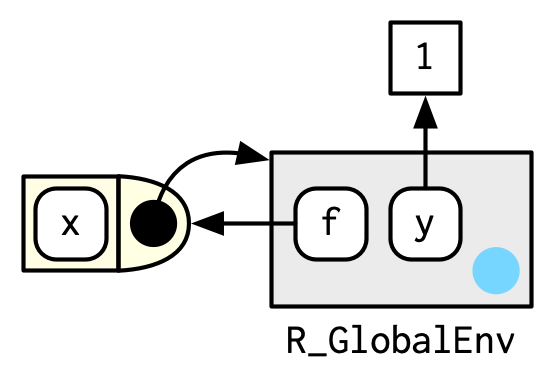

Show the code
# 访问全局环境
globalenv()
#> <environment: R_GlobalEnv>
# 访问当前环境
environment()
#> <environment: R_GlobalEnv>在编程语言中，环境指的是一个包含对象、变量和函数的虚拟空间。环境可以理解为一个包含名称和与之绑定（bind）的值的集合，并且每个环境都有一个父环境，形成一个层次结构。R语言中的环境概念与作用域规则紧密相关，尤其是词法作用域（Lexical scoping）。
词法作用域，也称为静态作用域，是根据代码的书写结构来确定变量的可见性和作用域的。这意味着变量的作用域是由它被定义时的环境决定的，而不是在运行时动态决定的。例如，当在函数中访问一个变量时，R会首先在函数自身的环境内查找，如果没有找到，就会沿着环境链向上在父环境中查找，直到找到该变量或者达到全局环境 。
在R中，词法作用域遵循以下原则：
Name masking（名称覆盖）：在内层作用域中定义的变量可以遮蔽外层作用域中的同名变量 。
Functions versus variables（函数vs. 变量）：函数可以作为一等公民在R中被创建和传递，但它们的作用域规则与普通变量相同，遵循词法作用域。
A fresh start principle（初始化）：当进入一个新的环境时，变量的作用域从头开始，即使与外层环境有同名变量也不会直接使用外层环境的变量。
Dynamic lookup（动态查找）：虽然R主要是使用词法作用域，但在某些情况下，如函数在全局环境中定义并调用时，可能会出现类似动态作用域的行为，即变量的值取决于调用
# 访问全局环境
globalenv()
#> <environment: R_GlobalEnv>
# 访问当前环境
environment()
#> <environment: R_GlobalEnv>library(rlang)
identical(global_env(), current_env())
#> [1] TRUE
# 环境不是向量
global_env() == current_env()
#> Error in global_env() == current_env(): comparison (==) is possible only for atomic and list types每个环境都有一个父环境（parent）。用于实现词法作用域：如果在当前环境中找不到名称，则 R 将在其父环境中查找（依此类推）。可以通过向 env() 提供未命名的参数来设置父环境。如果不提供它，它将默认为当前环境。

e2a 是 e2b 的父级。
# 查看父级
identical(e2a, env_parent(e2b))
#> [1] TRUE
env_parent(e2a)
#> <environment: R_GlobalEnv>默认情况下，当到达全局环境时停止。如果覆盖默认行为，则可以看到全局环境的父级包括每个加载的包。
# 查看所有父级
e2a
#> <environment: 0x00000280c7051f98>
env_parents(e2b)
#> [[1]] <env: 0x00000280c7051f98>
#> [[2]] $ <env: global>
env_parents(e2b, last = empty_env())
#> [[1]] <env: 0x00000280c7051f98>
#> [[2]] $ <env: global>
#> [[3]] $ <env: .conflicts>
#> [[4]] $ <env: package:rlang>
#> [[5]] $ <env: package:stats>
#> [[6]] $ <env: package:graphics>
#> [[7]] $ <env: package:grDevices>
#> [[8]] $ <env: package:utils>
#> [[9]] $ <env: package:datasets>
#> [[10]] $ <env: package:writexl>
#> [[11]] $ <env: package:readxl>
#> [[12]] $ <env: package:lubridate>
#> [[13]] $ <env: package:forcats>
#> [[14]] $ <env: package:stringr>
#> [[15]] $ <env: package:dplyr>
#> [[16]] $ <env: package:purrr>
#> [[17]] $ <env: package:readr>
#> [[18]] $ <env: package:tidyr>
#> [[19]] $ <env: package:tibble>
#> [[20]] $ <env: package:ggplot2>
#> ... and 9 more environments只有一个环境没有父环境：空( empty)环境。每个环境的父级最终都会随着空环境而终止。

# 查看所有父级
env_parents(e2d)
#> [[1]] <env: 0x00000280c028cdd8>
#> [[2]] $ <env: empty>
e2c
#> <environment: 0x00000280c028cdd8>
env_parents(e2c)
#> [[1]] $ <env: empty>环境的工作是将一组名称关联或绑定（bind）到一组值。
# name-value pairs
e1 <- rlang::env(
a = FALSE,
b = "a",
c = 2.3,
d = 1:3,
)
# 绑定自身
e1$d <- e1
# 只显示内存地址
e1
#> <environment: 0x00000280bf28a4a8>
#
env_print(e1)
#> <environment: 0x00000280bf28a4a8>
#> Parent: <environment: global>
#> Bindings:
#> • a: <lgl>
#> • b: <chr>
#> • c: <dbl>
#> • d: <env>
env_names(e1)
#> [1] "a" "b" "c" "d"
names(e1)
#> [1] "a" "b" "c" "d"new.env() 也可用于创建新环境。 hash size
<<-
常规赋值 <- 始终在当前环境中创建绑定一个变量
超级赋值 <<- ，重新绑定当前环境的父级中的现有名称
x <- 0
f <- function() {
x <<- 1
}
f()
x
#> [1] 1env_print(e1)
#> <environment: 0x00000280bf28a4a8>
#> Parent: <environment: global>
#> Bindings:
#> • a: <lgl>
#> • b: <chr>
#> • c: <dbl>
#> • d: <env>
# error 无顺序，不能用数字索引
e1[[1]]
#> Error in e1[[1]]: wrong arguments for subsetting an environment
# $ [["name]]
e1$b
#> [1] "a"
e1[["a"]]
#> [1] FALSEe1$x <- NULL # 不能删除
env_has(e1, "x")
#> x
#> TRUE
env_unbind(e1, "x") # 解绑定
env_has(e1, "x")
#> x
#> FALSE
env_print(e1)
#> <environment: 0x00000280bf28a4a8>
#> Parent: <environment: global>
#> Bindings:
#> • y: <dbl>
#> • a: <lgl>
#> • b: <chr>
#> • c: <dbl>
#> • d: <env>
#> • e: <dbl>delayed bindings autoload()允许 R 包提供行为类似于加载内存中的数据集
延迟绑定会创建 unevaluated promise
env_bind_lazy(current_env(), b =object.size(e1))
force(b)
#> 56 bytes
system.time(print(b))
#> 56 bytes
#> user system elapsed
#> 0 0 0
system.time(print(b))
#> 56 bytes
#> user system elapsed
#> 0 0 0active bindings 每次访问它们时都会重新计算
env_bind_active(current_env(), z1 = function(val) runif(1))
z1
#> [1] 0.2832856
z1
#> [1] 0.8915848f_recur <- function(..., env = caller_env()) {
if (identical(env, empty_env())) {
# base case
} else if (success) {
# success case
} else {
# recursive case
f(..., env = env_parent(env))
}
}where <- function(name, env = caller_env()) {
if (identical(env, empty_env())) {
# Base case
stop("Can't find ", name, call. = FALSE)
} else if (env_has(env, name)) {
# Success case
env
} else {
# Recursive case
where(name, env_parent(env))
}
}where("a", e3b)
#> <environment: 0x00000280bff16308>
where("b", e3b)
#> <environment: 0x00000280bff71c00>
e3a
#> <environment: 0x00000280bff71c00>
where("c", e3b)
#> Error: Can't find c
f_iter <- function(..., env = caller_env()) {
while (!identical(env, empty_env())) {
if (success) {
# success case
return()
}
# inspect parent
env <- env_parent(env)
}
# base case
}大多数环境是由 R 创建的

搜索路径：R_EmptyEnv→pkgs→R_GlobalENV
base::search()
#> [1] ".GlobalEnv" ".conflicts" "package:rlang"
#> [4] "package:stats" "package:graphics" "package:grDevices"
#> [7] "package:utils" "package:datasets" "package:writexl"
#> [10] "package:readxl" "package:lubridate" "package:forcats"
#> [13] "package:stringr" "package:dplyr" "package:purrr"
#> [16] "package:readr" "package:tidyr" "package:tibble"
#> [19] "package:ggplot2" "package:tidyverse" "package:conflicted"
#> [22] "package:showtext" "package:showtextdb" "package:sysfonts"
#> [25] "package:methods" "Autoloads" "package:base"
rlang::search_envs()
#> [[1]] $ <env: global>
#> [[2]] $ <env: .conflicts>
#> [[3]] $ <env: package:rlang>
#> [[4]] $ <env: package:stats>
#> [[5]] $ <env: package:graphics>
#> [[6]] $ <env: package:grDevices>
#> [[7]] $ <env: package:utils>
#> [[8]] $ <env: package:datasets>
#> [[9]] $ <env: package:writexl>
#> [[10]] $ <env: package:readxl>
#> [[11]] $ <env: package:lubridate>
#> [[12]] $ <env: package:forcats>
#> [[13]] $ <env: package:stringr>
#> [[14]] $ <env: package:dplyr>
#> [[15]] $ <env: package:purrr>
#> [[16]] $ <env: package:readr>
#> [[17]] $ <env: package:tidyr>
#> [[18]] $ <env: package:tibble>
#> [[19]] $ <env: package:ggplot2>
#> [[20]] $ <env: package:tidyverse>
#> ... and 7 more environments搜索路径上的最后两个环境始终相同：
环境Autoloads使用延迟绑定来节省内存，仅通过需要时加载包对象（如大型数据集）节省内存 。
基本环境package:base，是 base package 的环，它能够引导所有其他包的加载。访问base_env()
请注意，当您附加另一个包时，全局环境的父环境会发生变化：

命名空间 （namespaces） 的目标是确保以不同的顺序加载包，包将找到相同的功能，并且无论用户附加什么包，每个包的工作方式都相同。
sd
#> function (x, na.rm = FALSE)
#> sqrt(var(if (is.vector(x) || is.factor(x)) x else as.double(x),
#> na.rm = na.rm))
#> <bytecode: 0x00000280b9623028>
#> <environment: namespace:stats>包中的每个函数都与一对环境相关联：前面的包环境和命名空间环境。
包环境控制我们如何找到函数；命名空间控制函数查找其变量的方式。
包环境中的每个绑定也可以在命名空间环境中找到。
每个命名空间都有一个import环境，import环境的父级是base namespace，base namespace的父级是全局环境。

函数在创建时绑定当前环境，称为函数环境，用于词法作用域。在计算机语言中，捕获（或封闭）其环境的函数被称为闭包 closures 。
访问函数环境
y <- 1
f <- function(x) x + y
fn_env(f)
#> <environment: R_GlobalEnv>
e <- env() # 绑定当前环境为父级
env_parent(e)
#> <environment: R_GlobalEnv>
e$g <- function() 1 # g绑定在e中
env_print(e)
#> <environment: 0x00000280c752d9e0>
#> Parent: <environment: global>
#> Bindings:
#> • g: <fn>执行环境是函数环境的子级，由函数的创建位置决定。
g <- function(x) {
if (!env_has(current_env(), "a")) {
message("Defining a")
a <- 1
} else {
a <- a + 1
}
a
}# A fresh start principle
g(10)
#> [1] 1
g(10)
#> [1] 1每次调用函数时，都会创建一个新环境来托管执行。这称为执行环境（execution environment），其父级是函数环境
h <- function(x) {
# 1.
a <- 2 # 2.
x + a
}
y <- h(1) # 3.
执行环境通常是短暂的;函数完成后，环境将被垃圾回收（garbage collected）。
caller environment
rlang::caller_env() 提供了调用函数的环境。
调用栈（call stacks）由 frames 组成。调用栈是由调用函数的位置创建的。
f <- function(x) {
g(x = 2)
}
g <- function(x) {
h(x = 3)
}
h <- function(x) {
stop()
}在 R 中最常查看调用栈的方式是查看错误发生后的情况：traceback()
f(x = 1)
#> Error in h(x = 3):
traceback()
#> No traceback available使用 lobstr::cst()从头开始 来理解调用栈, call stack tree Figure 3.2
h <- function(x) {
lobstr::cst()
}
f(x = 1)
#> ▆
#> 1. └─global f(x = 1)
#> 2. └─global g(x = 2)
#> 3. └─global h(x = 3)
#> 4. └─lobstr::cst()调用栈的每个元素都是一个frame，也称为 evaluation context。Frames 是一个极其重要的内部数据结构，R 代码只能访问它的一小部分，因为篡改它会破坏 R。
frame 有三个关键组件：
expr ）env ）
在调用栈中而不是在封闭环境中查找变量称为dynamic scoping 。